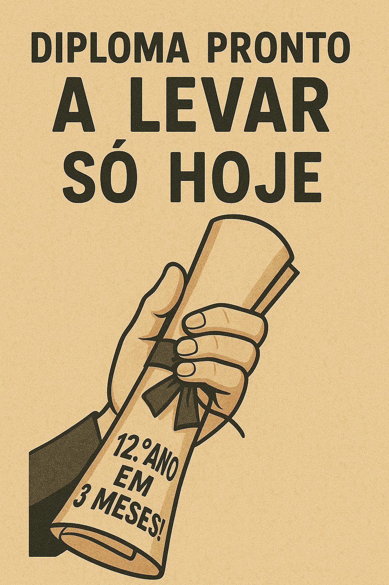

Publicado em 2025-05-22 19:46:36
Ouvi o anúncio no rádio e pensei que era uma sátira. Mas não — era real. Um convite público à fraude intelectual com sotaque simpático:
“Conclua o 12.º ano em apenas 3 meses, sem complicações, com acesso garantido à universidade!”
E pronto. Está feito. A educação portuguesa transformou-se oficialmente numa campanha de hipermercado. O saber, esse velho estorvo, foi substituído pela velocidade. A formação tornou-se um drive-in. Pede-se um diploma no altifalante e 3 meses depois está na mão, sem perguntas nem chateações.
Não tens tempo para estudar? Não há problema. Tens é que pagar. Porque o conhecimento já não é cultivado — é embalado e plastificado como fiambre em promoção.
E o mais triste? Isto não escandaliza ninguém. Nem o Ministério da Educação, nem os sindicatos, nem os senhores do ensino superior. Porque todos estão ocupados a fazer contas para ver quantos “alunos” vão chegar — não importa se sabem, importa que paguem.
O valor do esforço foi substituído pela estética da facilidade. Os exames são obstáculos burocráticos, os professores meros validadores, e os alunos, clientes com cartão de pontos.
Chegará o dia em que se ouvirá:
“Licencie-se em Engenharia Aeroespacial em 6 semanas! Oferta de estágio na NASA incluída!”
E alguém acreditará. E outro pagará. E o sistema continuará.
Porque isto já não é educação. É produção em massa de diplomas low-cost.
E depois perguntam por que razão Portugal não tem produtividade, inovação ou massa crítica. Talvez porque em vez de cultivarmos cérebros, estamos a empacotá-los para entrega rápida.
Mas com etiqueta. E certificado. E acesso à universidade, claro. Sem complicações.
Por : Francisco Gonçalves in Fragmentos de Caos
Um desabafo sobre o silêncio que sufoca quem ousa pensar. Uma reflexão sobre o ato de escrever num país que prefere calar.
Ler o artigo completo